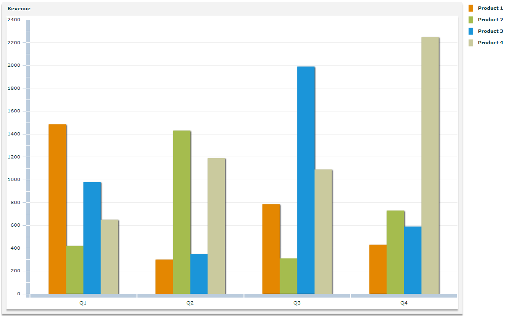
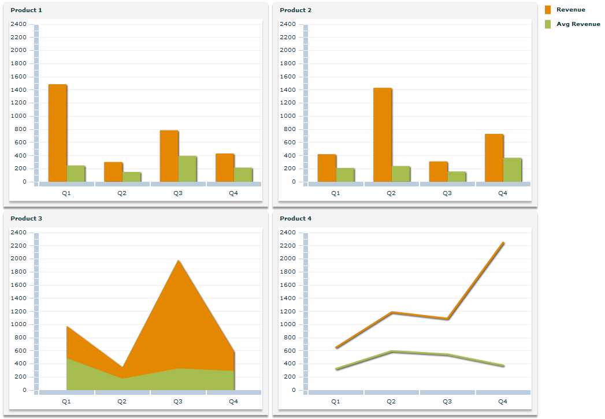
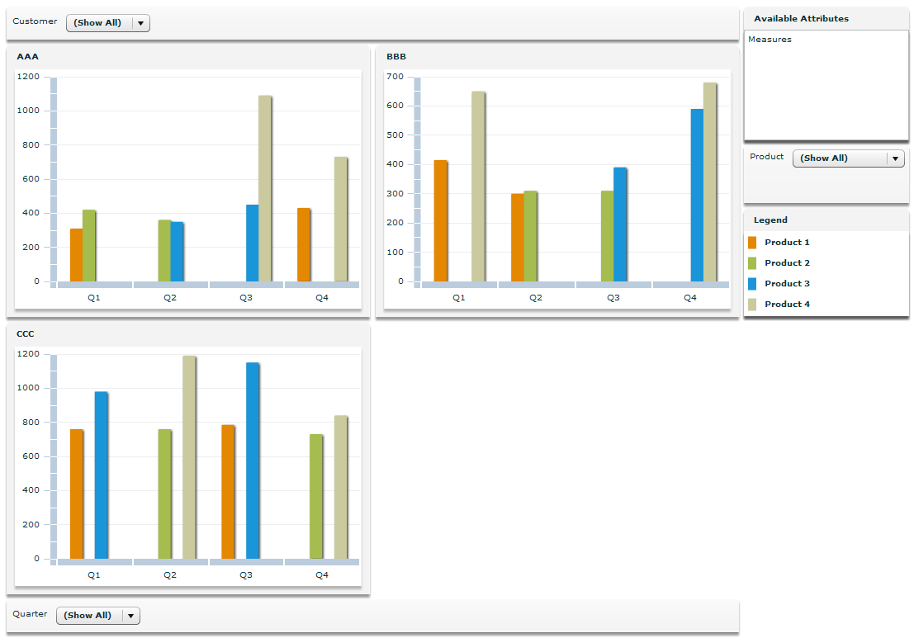

IBM® ILOG Elixir lets you display the result of Online
Analytical Processing (OLAP) queries in a chart component. This is
a similar feature to the Adobe®
Flex®
OLAPDataGrid letting you display the result of an
OLAP query in a data grid.
The IBM ILOG Elixir OLAPChart component can be configured to display most kinds of data series
available with the Flex charting components. Depending on how it is
configured, it can arrange the rows that are the result of the query
as series or as chart instances in grid cells or a mixture of both.
The following figures show examples of OLAP charts for
a set of products.


In addition to the OLAPChart object, which must be configured with an OLAP query, IBM ILOG Elixir provides a pivot chart that can display OLAP data. The pivot chart
does not require an OLAP query to be written; instead the end-user
can configure the content of the chart using mouse gestures such as
dragging the fields of interest onto the chart.
The following figure shows an example of a pivot chart.

For more information on OLAP and how to create OLAP schemas
and queries that can fit an IBM ILOG Elixir component, read Creating an OLAP Schema and Creating OLAP Queries in Advanced Data Grid Controls and Automation Tools>Creating OLAP Data Grids in the Flex Data Visualization Developer's
Guide.